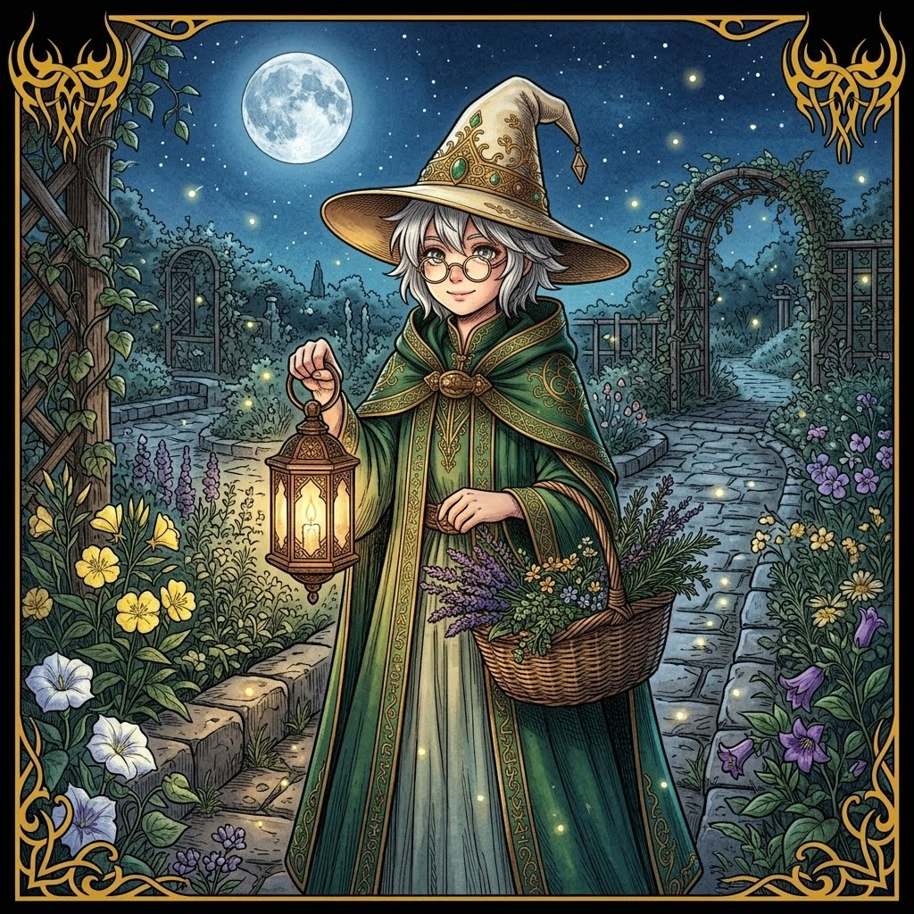
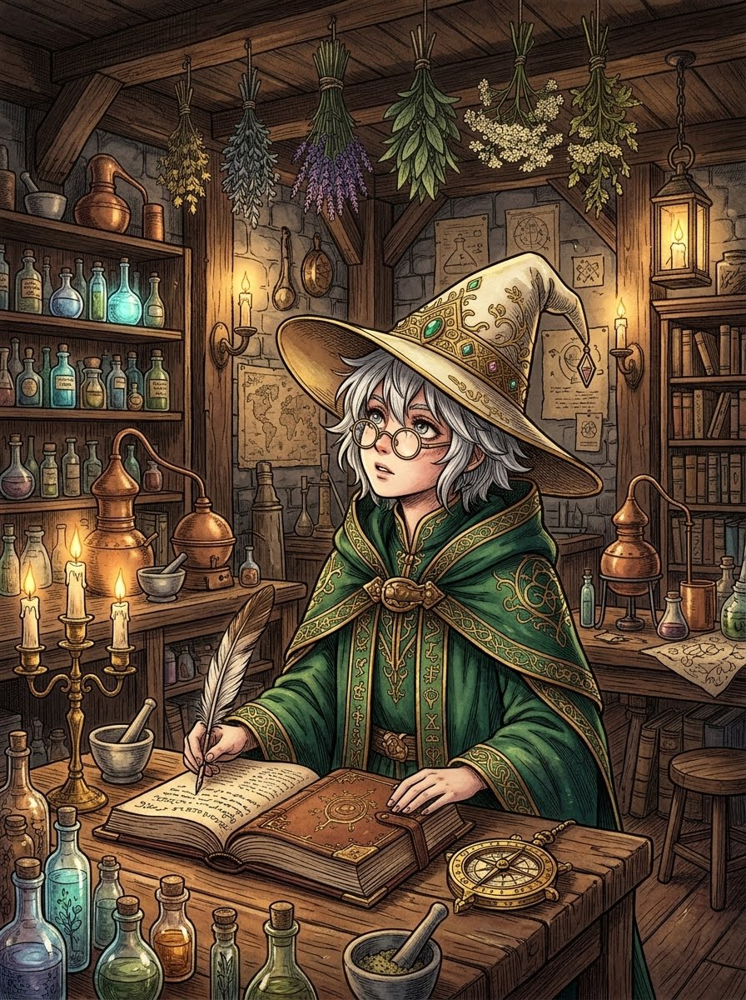

Step inside and pull up a chair — I’m the witch keeping the cauldrons bubbling behind these digital walls. My journey started in a bustling city of red clay and tall pines before winding south to the bayous, where I first started mixing everyday curiosity with a bit of magic. These days, I spend my daylight hours as a scholar of the digital arts, weaving binary runes and complex logic into code by day while brewing hearty elixirs by night. This grimoire is where my two worlds meet, blending modern craft with old-world flavor
You’ll notice "Apprentice Azara" serving as the official face of this apothecary, a nod to my love for animated tales and illustrated grimoires. In her world, magic isn't an inherited gift, it's a deliberate craft learned by carefully inking sigils and putting in the study—no different than writing clean code or perfecting a potion. Just like Azara running her quiet atelier away from the noise, I wanted this space to feel like a cozy workshop where anyone can learn a little everyday magic

Before you wander off into the stacks, remember that every grand spell starts with a single, shaky brushstroke. Whatever craft you are chasing, show up for it every day—even if you only have time to brew a single cup of tea or ink one tiny sigil. If you happen to be learning how to bind structure, weave visual enchantments, and spark interactive life into digital realms just like I am, trust the process and take it one day at a time. The cauldrons might bubble over and the syntax curses might bite back occasionally, so keep a good snack nearby, stay stubborn, and keep practicing your magic